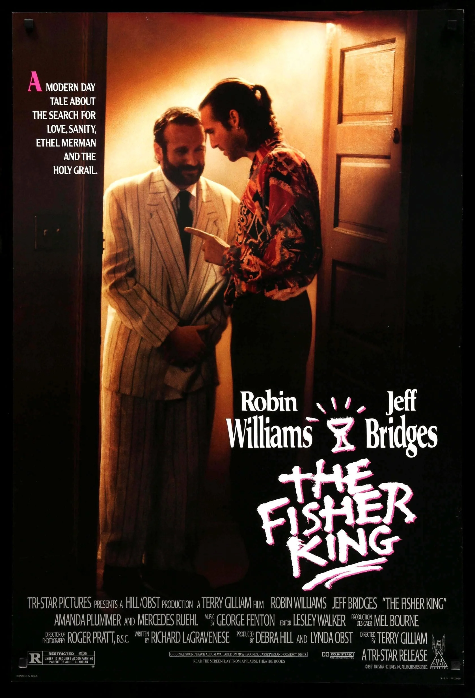

The Fisher King (en español: El rey pescador o Pescador de ilusiones) es una película estadounidense de 1991 dirigida por Terry Gilliam y protagonizada por Jeff Bridges, Robin Williams, Mercedes Ruehl y Amanda Plummer en los papeles principales.
El título de la película hace referencia a la leyenda artúrica del Rey Pescador y el santo grial. Fue galardonada con varios premios cinematográficos, tanto estadounidenses como internacionales.
